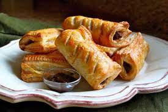
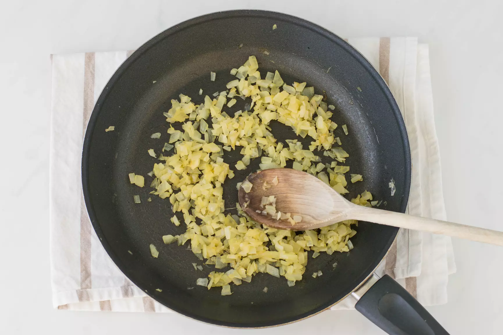
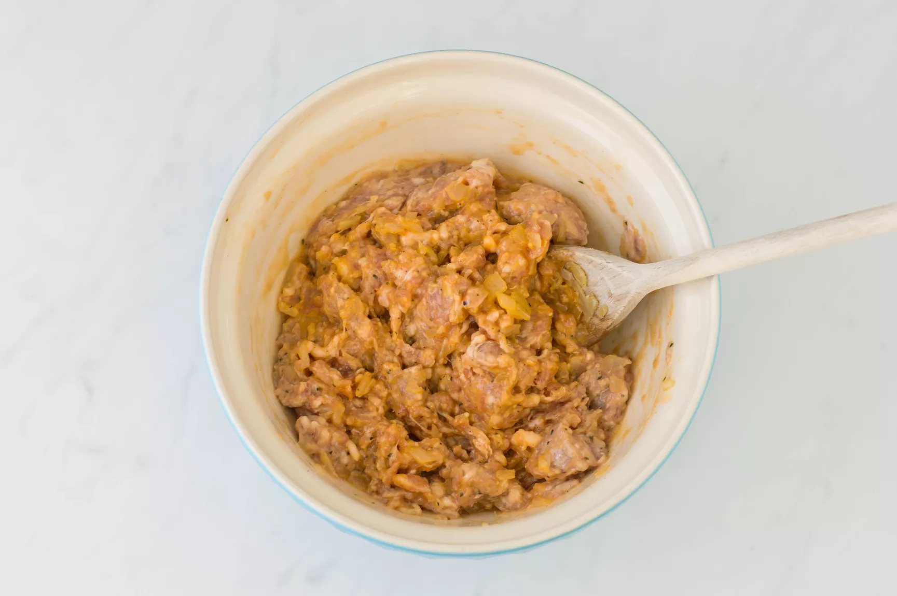
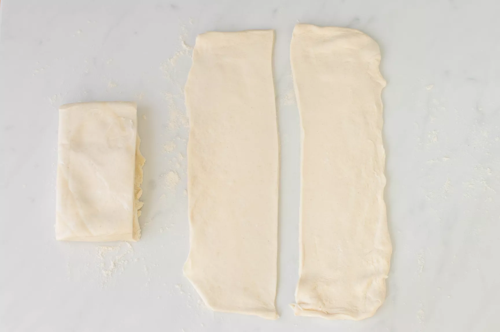
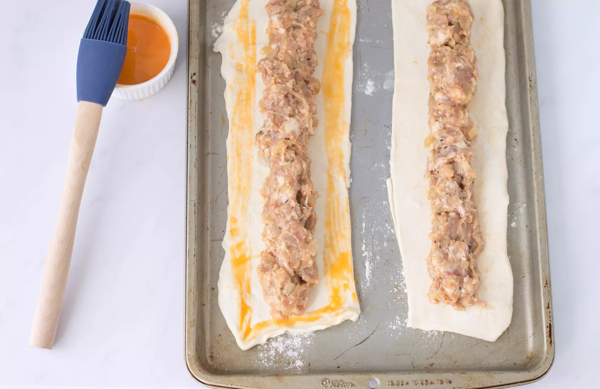
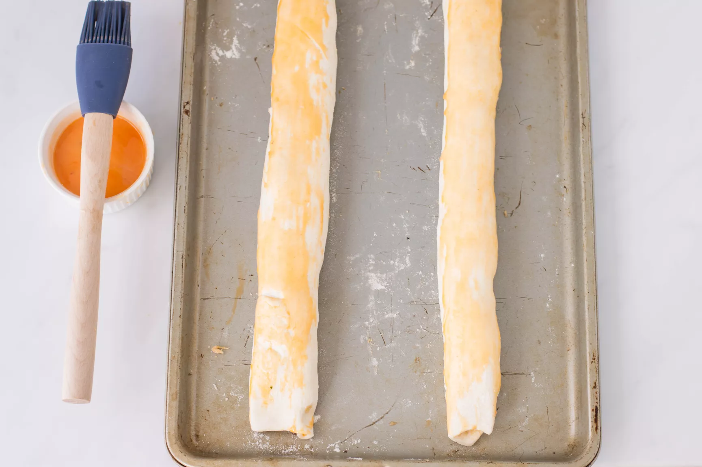
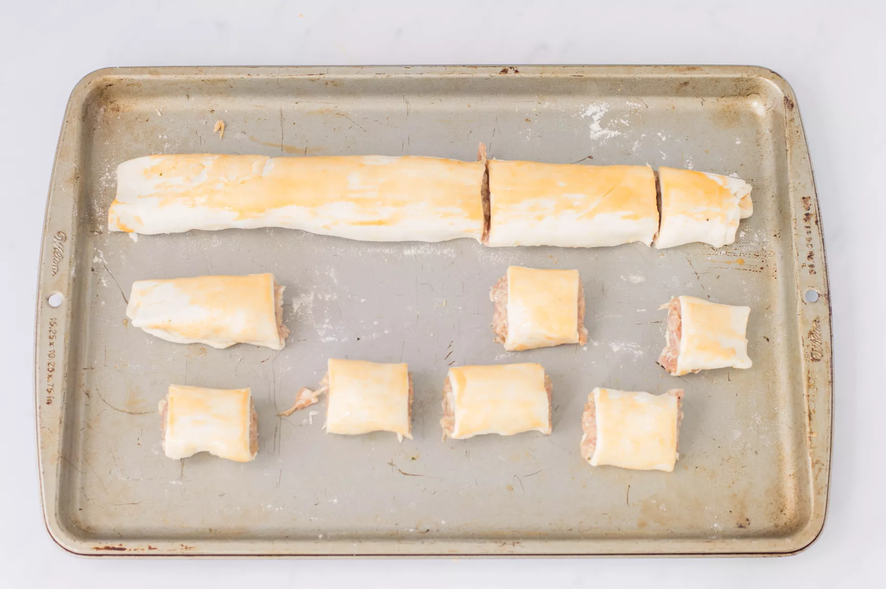
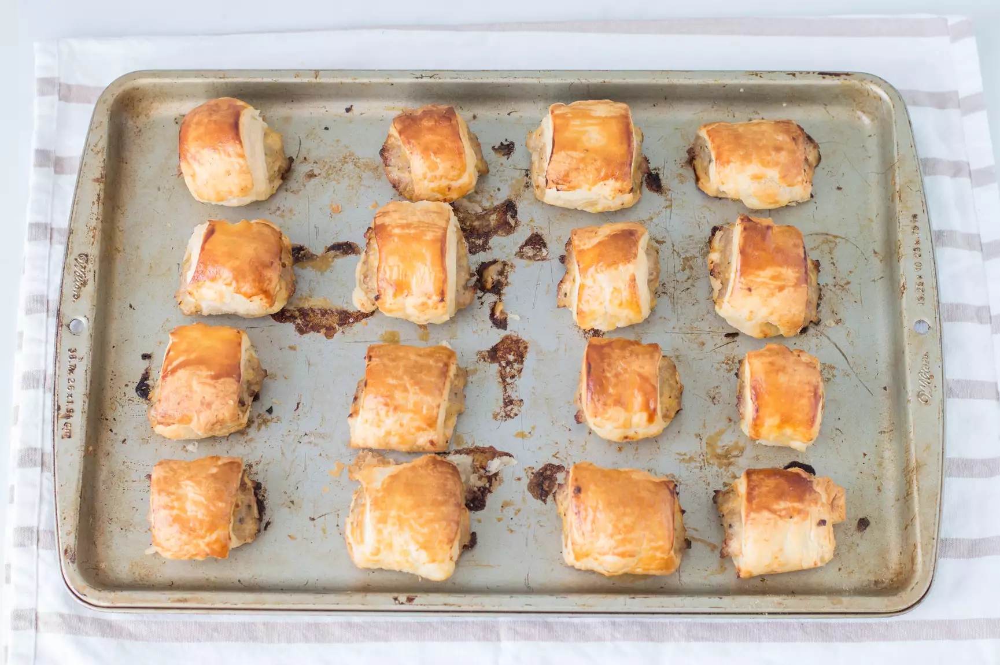

British Sausage Rolls

Wonderfully flaky with the brilliance of authentic British pork.
This succulant dish is not only easy but incredibly tasty!
be ready to purchase your life savings in puff pastry and imported
meat for this magnificent dish. For any occation, party or just to stuff in your gizzard.
Ingredients
- 2lbs of British pork
- 1 tablespoon of vegetable oil
- 1 medium onion, finely chopped
- 3 medium free range eggs, divided
- ground black pepper, to taste
- salt
- 2 tablespoons of flour, for rolling the pastry
- 25 ounces of puff pastry, or shortcrust pastry
How to Bake

-
In a frying pan, heat the vegetable oil on medium heat and add
the onion to cook for approximately 7 minutes, or until it starts
to lightly brown.

-
n a large mixing bowl, add the sausage meat, cooked onion, and 2
of the eggs. Season with a couple of pinches of black pepper and
a good sprinkling of salt. Mix well until all the ingredients are
thoroughly and evenly combined.

-
Preheat the oven to 400 F. On a lightly floured surface, roll out
the pastry into two 8- by 10-inch rectangles. Cut each rectangle
into 2 long strips (4 total) and rest them in the fridge for at
least 10 minutes.

-
Place the cold pastry onto 2 lightly greased baking pans. In the
center of each pastry, form the sausage meat into a long sausage
the length of the pastry strip. Beat the remaining egg in a small
bowl and lightly brush the edges of the pastry.

-
Fold the pastry over the meat filling to form long rolls. Flip the
sausage roll over so the seam is underneath. Lightly brush the top
surface with egg.

-
Cut the rolls into 1 1/2-inch lengths. Or vary the length to the
style of roll you want.

-
Cook in the preheated oven for 20 minutes or until golden brown.
Leave them to cool before packing them into your picnic basket or
lunch box, or simply eat them right away. Enjoy.